UpCrew.
Work that moves with you
A mobile experience for discovering shifts, understanding the commitment and staying informed from application to earnings.
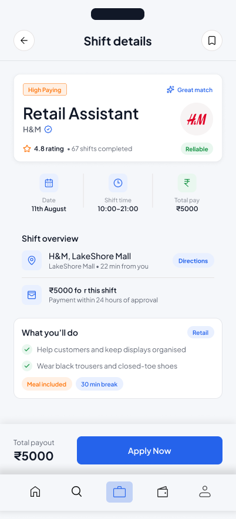
Flexible work shouldn’t mean uncertain decisions.
A worker–side shift companion
UpCrew brings nearby opportunities, applications, upcoming shifts, earnings and account details into one mobile experience. The supplied screens show retail, hospitality, event and warehouse roles around Thane and Mumbai.
Make the next step understandable
The interface needs to explain what a shift pays, when and where it happens, whether an application has been accepted, and what to do before arrival. Those questions change as the worker moves through the journey.
Facts before commitment
Keep pay, schedule and location together so the choice is informed, not just visually attractive.
State before action
Distinguish sending an application from being selected. Let each status explain what happens next.
Help without a dead end
Permission deferral, code recovery and visible support preserve a route forward.
One journey. Distinct jobs to do.
A structural reading of the supplied screens: discovery leads to commitment; tracking, money and identity remain easy to return to.
Linear Onboarding & Verification Funnel
The mandatory authentication sequence every new worker completes once to verify identity, establish trust, and unlock active shift discovery.
5 Persistent Bottom Navigation Destinations
Once authenticated, the persistent bottom navigation bar anchors the worker's daily routine across five dedicated surfaces, handling everything from discovery and filtered search to shift management and instant earnings withdrawal.
Discover
Home feed & curated recommendations
High-pay urgent shift banners
Instant role previews
Search Panel
Dedicated keyword & role search
Pay, timing & radius filters
Map-based shift lookup
My Shifts
Applied · Upcoming · Completed
Real-time application progress
Arrival checklist & check-in
Wallet
Real-time available balance
Shift-by-shift ledger & history
1-tap UPI bank transfer
Profile
Worker identity & Aadhaar badge
Skill documents & preferences
Help centre & account settings
Browse
DiscoveryInspect
Shift detailsApply
1-tap commitIn Review
Waiting stateSelected
ConfirmedPrepare
Arrival guideEarnings
Wallet payoutVerification has a recovery branch. Submission has a waiting state. Selection leads to arrival guidance. Completion and payment approval are referenced in the interface; their operational screens are outside the supplied set.
Codified for the field: UpCrew Mobile System v1.0
UpCrew’s interface is codified into a living mobile design system engineered for high-velocity shift discovery and field durability. Across typography, spatial geometry, tonal color ramps, and interactive state matrices, every element is extracted and built directly into native web components—ensuring 44px ergonomics in direct outdoor sunlight.
Four-Tier Token Taxonomy & Implementation Contracts
Tokens flow through an unbending four-tier inheritance pipeline, enforcing consistency between design tokens and mobile codebase implementations.
color.blue.600
#2558E8 (Base Hex)
action.primary.default
Functional Alias
button.primary.container
Specific Element Role
job-card.featured
Assembled Domain Pattern
No Hex in Components
Components never consume raw hex codes directly. Every visual property resolves through semantic token aliases, eliminating hardcoded styling drift.
State is Explicit
Every interactive element features dedicated tokens for default, hover/pressed, focus, and disabled states.
Soft + Strong Pairing
Status badges pair low-opacity background fills (e.g. green 100) with high-contrast text and indicator pips (green 700) for instant glanceability.
Color is Redundant
Color never carries meaning alone. Every critical status pairs tint with explicit typographic labels, icons, or tactile shapes to guarantee accessibility.
Tonal Color Ramps & WCAG Contrast Verification
Curated tonal ramps provide mathematical gradation from 50 to 900 steps, anchored by high-visibility primaries calibrated for outdoor sunlight.
Primary Action Blue
Primary CTAs, active selections, escrow security & interactive states#EFF6FF#DBEAFE#BFDBFE#93C5FD#60A5FA#3B82F6#2558E8#1D4ED8#1E40AF#1E3A8AAccent & Urgency Orange
Surge pay premiums, reservation countdowns, human energy & warnings#FFF7ED#FFEDD5#FED7AA#FDBA74#FB923C#F26419#EA580C#C2410C#9A3412#7C2D12Verified & Settlement Green
Confirmed shifts, completed payouts, business verification & success#ECFDF5#D1FAE5#A7F3D0#6EE7B7#34D399#10B981#16A34A#059669#047857#064E3B5 Verified Contrast Pairs (Field Tested)
blue 600 (#2558E8)
Background: white (#FFFFFF)
charcoal (#141210)
Background: white (#FFFFFF)
white (#FFFFFF)
Background: blue 600 (#2558E8)
green 700 (#047857)
Background: green 50 (#ECFDF5)
orange 700 (#C2410C)
Background: orange 50 (#FFF7ED)
Plus Jakarta Sans Foundry & 11-Step Type Scale
Geometric grotesque crafted with open counters and balanced proportions. Generous aperture clarity and high x-height ensure crisp scanning on budget mobile screens in high glare.
Plus Jakarta Sans
Geometric Grotesque engineered for clarity, numerical legibility, and high-density mobile interfaces.
| Token Role | Size / Line Height | Weight | Usage & Surface Intent |
|---|---|---|---|
| Display | 27 / 34 px |
Bold 700 | Launch statement & key confirmation screens |
| Title | 23 / 30 px |
Bold 700 | Primary screen titles (e.g. "All Jobs", "My Shifts") |
| Heading | 20 / 26 px |
Bold 700 | Primary card or job detail headline |
| Subheading | 17 / 23 px |
SemiBold 600 | Section lead paragraphs & employer names |
| Body | 14 / 21 px |
Regular 400 | Primary narrative reading copy & instructions |
| Body Small | 13 / 19 px |
Regular 400 | Compact support copy, address & requirements |
| Label | 12 / 16 px |
SemiBold 600 | Form field headers, metadata tags & tabs |
| Button | 12 / 16 px |
Bold 700 | Primary, secondary & filter button action labels |
| Caption | 11 / 15 px |
Medium 500 | Supporting timestamps, distance & fine print |
| Micro | 10 / 14 px |
Medium 500 | Dense status badges & compact numerical counters |
| Nano | 9 / 12 px |
SemiBold 600 | Exceptional legal footnotes & badge tags |
2px Micro-Grid, 8pt Spacing Scale & 402px Geometry
Spatial harmony constructed on an 8pt layout rhythm paired with a 2px micro-adjustment grid, ensuring optical balance and predictable vertical cadence.
The 8pt Spacing Ladder
Governs all margins, paddings, and component gap intervals.
402px Mobile Frame & Component Bounds
Governing dimensions calibrated for standard Android & iOS devices.
R_outer = R_inner + Padding
Interactive Component Library & Live Loading Lab
Zero Cumulative Layout Shift (CLS: 0.000) verified architecture calibrated to Apple HIG and Google M3 standards: 4 button variants across 6 standardized states, single-tap filter chips with contextual icon reveals, 44px minimum touch targets, and Emil Kowalski state-morphing physics.
Live Loading States & Layout Shift Prevention
Skeletons must exactly mirror the typography, bounding boxes, and metadata geometry of the hydrated card. Compare the pre-fetch skeleton shimmer directly against the hydrated production card below, or test live state morphing.
Retail Assistant
The 4-Variant × 6-State Button Matrix
44px height · 16px horizontal inset · 8px icon gap · 12/16 bold label · 8px concentric radius · 2px focus ring. Every variant satisfies WCAG 2.2 contrast and incorporates tactile scale(0.96) press feedback.
Filter Chips & Segmented Control
Contextual Icon TransitionSoft + Strong Status Pills
Pulsing Radar TelemetrySearch & Field Inputs
44px HIG Touch BoundsShow the promise. Then show the product.
The introduction moves from a broad value proposition to tangible examples of discovery, application tracking and earnings.
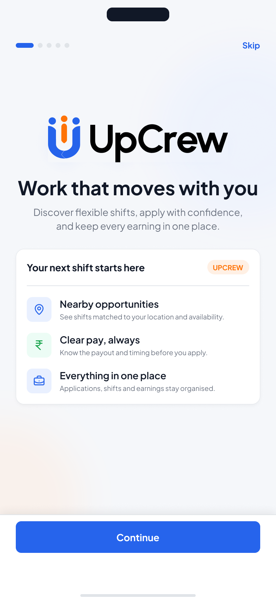
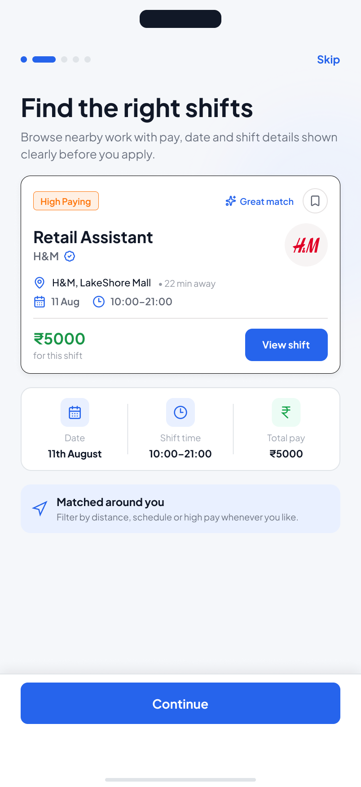
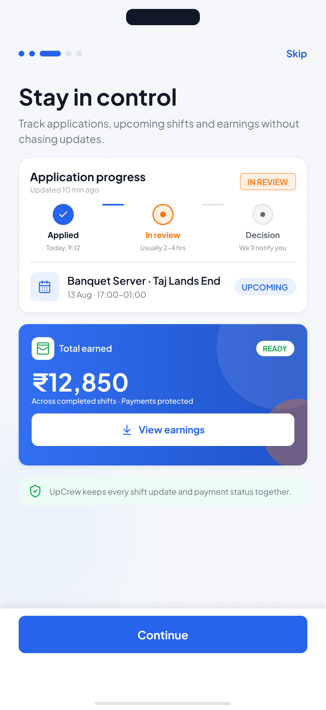
A concise starting point
Nearby opportunities, clear pay and everything in one place establish the three reasons to continue. Skip stays visible.
Make the promise concrete
A Retail Assistant example exposes ₹5000, 11th August and 10:00–21:00. The preview introduces the same facts used later to decide.
Preview life after applying
The timeline and ₹12,850 earnings example communicate continuity: updates and payments belong to the same experience.
Ask when needed. Explain why it matters.
Location and notification permissions are deferred until the user understands their utility. Clear rationale and zero penalties for skipping keep agency in the worker's hands.
Value before access
Contextual prompts explain that notification permissions unlock instant shift alerts and location accuracy reduces travel uncertainty before triggering system-level dialogs.
Granular, independent choice
Notifications and location services operate independently. Workers can enable push notifications for shift releases while keeping geolocation manual.
Zero-friction deferral
"Not now" and "Skip" remain prominent and accessible with zero penalty. Workers can freely browse all shifts across Mumbai and Thane without granting immediate access.
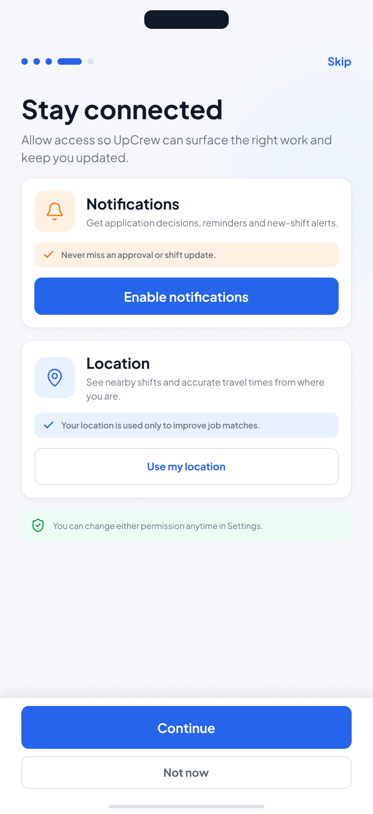
A familiar path into the account.
Phone entry, a one-time code and explicit confirmation keep the authentication model visible at each step.
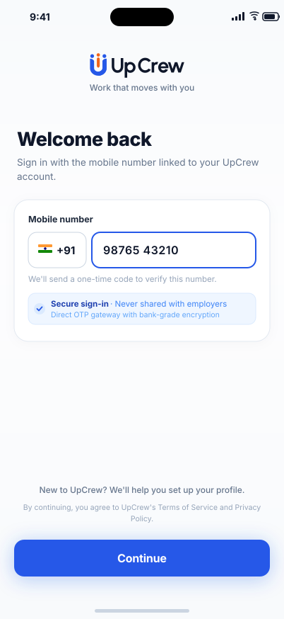
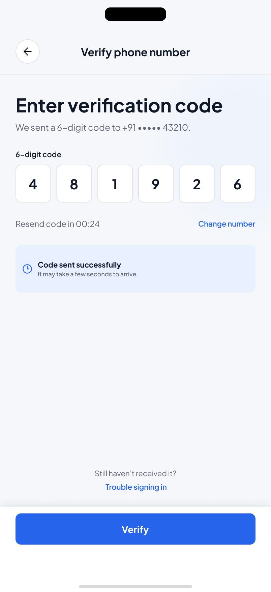
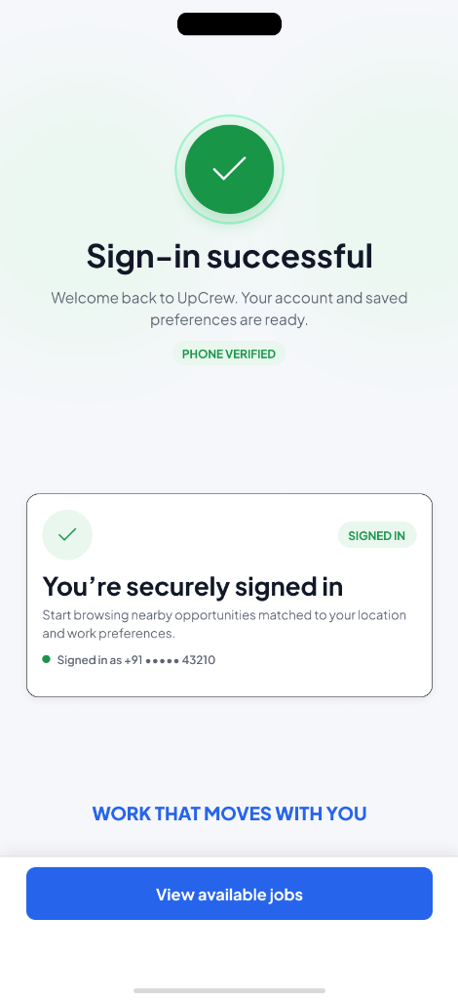
One primary input
The +91 country code and 98765 43210 entry are grouped under Mobile number. The one-time-code explanation sets expectations before Continue.
Delivery is a visible state
The masked destination +91 ••••• 43210, code fields and 00:24 resend countdown explain where the code went and when another can be requested.
Confirm, then move forward
Phone verified and the masked account confirmation resolve uncertainty. View available jobs becomes the next primary action.
Browse by reality, not job titles.
Hourly workers decide on shifts based on three non-negotiables: guaranteed cash payout, exact timing, and transit distance. The live feed prioritizes decision-ready facts over generic job postings.
Single-tap horizontal filter chips
Thumb-friendly filter rail ("All jobs 24", "Retail 8", "Nearby", "High paying") allows instantaneous category filtering without modal disruptions or scrolling friction.
Decision-first shift cards
Total payout (₹5,000), verified employer badge (H&M, LakeShore Mall), transit distance (22 min away), and shift window (10:00–21:00) remain visible upfront on every card.
Instant application triggers
One-tap "View shift" and direct action paths preserve scanning momentum for high-demand retail and hospitality shifts that fill within minutes of release.
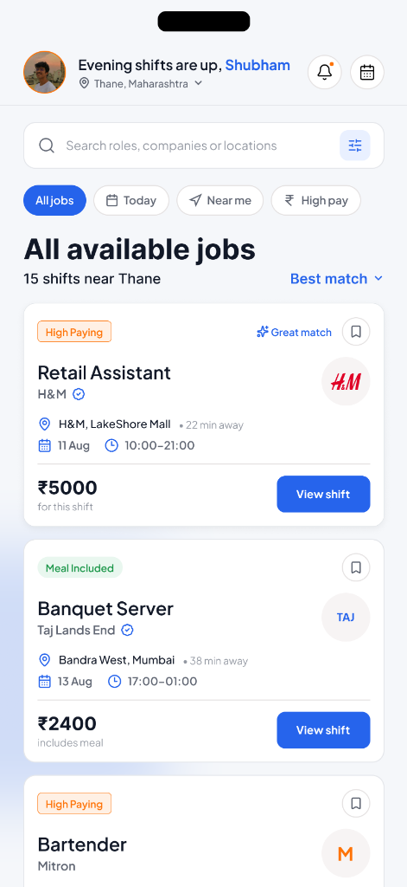
Zero ambiguity before the worker commits.
Before an applicant taps 'Apply Now', every operational parameter is pinned: dress code requirements, meal breaks, exact venue entrance, and 24-hour payment guarantees.
Pinned compensation & platform escrow
Payout of ₹5,000 prominently displayed alongside payment terms ("Payment within 24 hours of approval") backed by UpCrew platform escrow to eliminate bad-faith wage withholding.
Venue & arrival clarity
Specific store branch ("H&M, LakeShore Mall"), calculated travel duration ("22 min from you"), and 1-tap Google Maps directions integration resolve physical commute doubt.
Unambiguous role expectations
Explicit bulleted requirements ("Wear black trousers and closed-toe shoes", "30 min meal break included") remove on-site surprises and supervisor friction.
Transparent waiting states, zero ghosting.
The greatest source of gig worker anxiety is the void between applying and hearing back. UpCrew replaces radio silence with real-time application tracking and guaranteed decision windows.
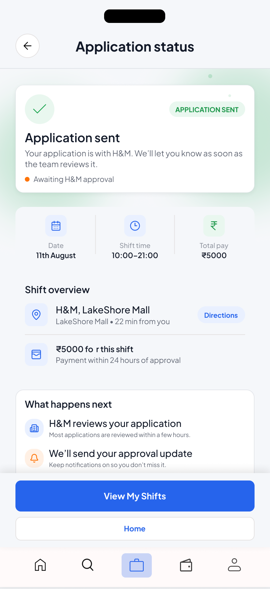


1-tap application
Pre-verified profile credentials eliminate repetitive form fills. A single confirmation review ensures deliberate worker intent without friction.
Live progress tracker
Stepper visualization ("Applied 9:12 AM" → "In Review: Usually 2–4 hrs" → "Decision pending") keeps workers informed without chasing updates.
Immediate arrival guidance
When selected, the screen shifts immediately to arrival instructions: supervisor contact, check-in kiosk location, and calendar sync.
The worker's operational cockpit.
A dedicated hub for active, upcoming, and completed obligations. Segmented views ensure workers never miss a shift or lose track of pending earnings.
Tri-state segmented management
Distinct tabs for 'Applied', 'Upcoming', and 'Completed' segregate active obligations from historical earnings records, preventing cognitive overload.
Urgent contextual callouts
Imminent shifts surface transit countdowns ("Shift starts in 2h 15m · 35 min commute"), venue directions, and one-tap emergency cancellation protocols.
Verified attendance records
Completed shift cards log supervisor sign-off timestamps and verified clock-in GPS coordinates, creating an unshakeable worker reputation record.
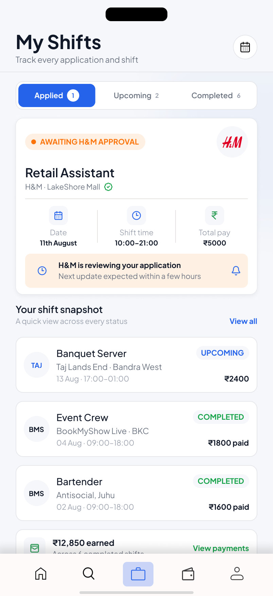
Earned today, visible immediately, withdrawn instantly.
Financial transparency bridges worker dignity and platform retention. Total earnings, available balances, and verified KYC profiles provide proof that labor is honored.
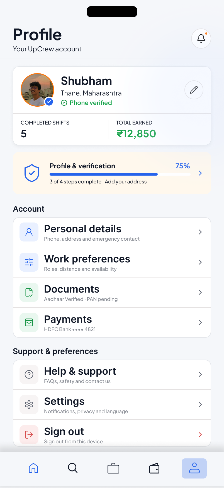
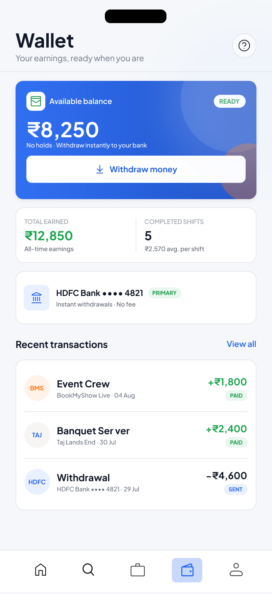
Granular balance segregation
Distinguishes between 'Total Earned' (₹12,850), 'Ready to Withdraw' (₹5,000), and 'In Processing' escrow funds awaiting shift supervisor sign-off.
Instant UPI direct settlement
One-tap payout to registered UPI VPA (e.g. Google Pay / PhonePe) with zero hidden platform deductions or arbitrary withdrawal thresholds.
Verified profile & rating equity
Worker profiles document verified government ID badges, 4.8★ rating across 67 completed shifts, and punctuality scores that unlock higher-paying shifts.
Field resilience: zero dead ends in the real world.
In day-to-day gig work, users encounter unstable cellular networks, empty search radius states, document rejections, and employer schedule changes. Every edge state provides an immediate, actionable escape route.
Zero Shifts in Selected Radius
Never a dead end. Explains why 0 results matched, allows 1-tap expansion from 5 km to 15 km, and offers push notifications for nearby openings.
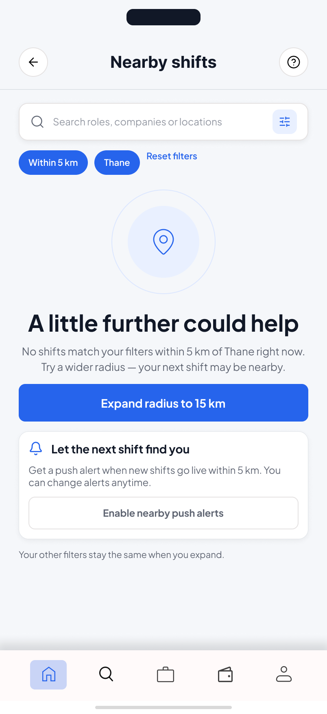
Document Rejection & Recovery
Avoids vague rejection banners. Highlights the exact document issue (such as glare or unreadable text) with clear instructions for re-capture.
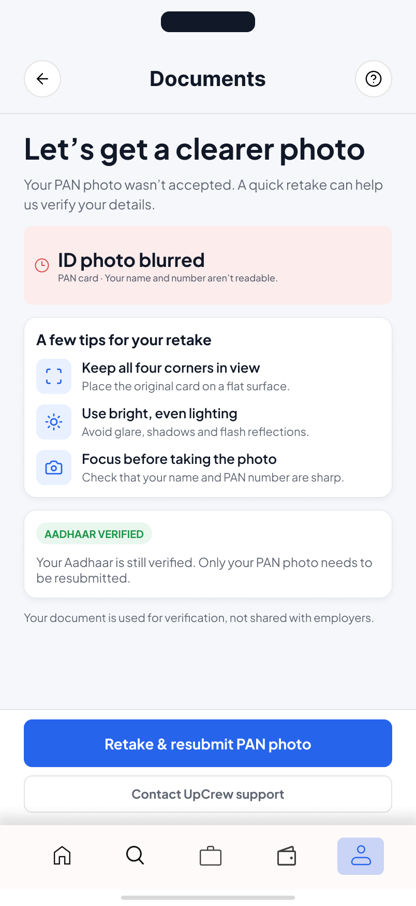
Offline Confirmed Shift Pass
Caches confirmed shift location, supervisor contact details, and venue directions locally so workers retain access even if mobile reception drops in transit.
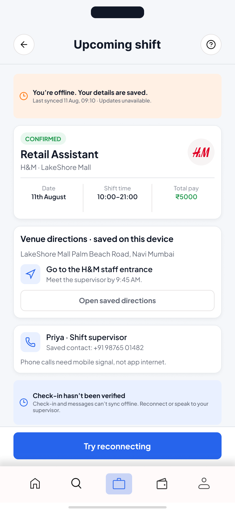
Employer Emergency Cancellation
Provides immediate notice with guaranteed cancellation compensation details (₹500 payout) and proactive recommendations for alternative shifts in the same time window.
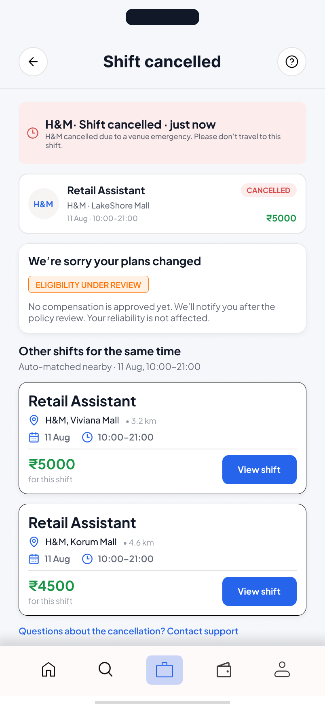
Verified On-Site Live Check-In
Protects attendance and reliability records through on-site supervisor confirmation and verified location coordinates.
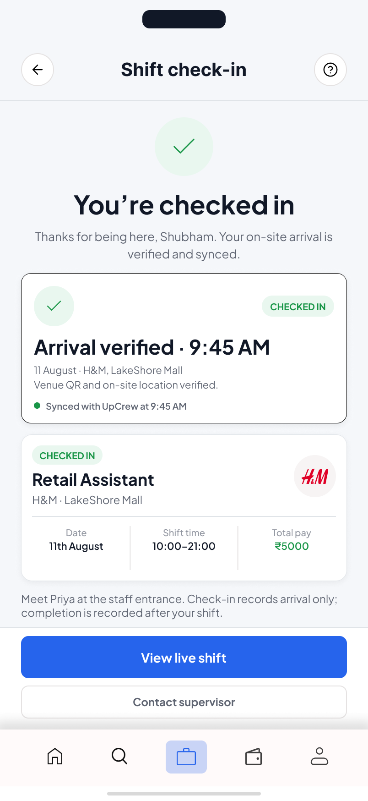
3-Hour Transit & Shift Reminder
Proactive countdown notifications with estimated transit times and supervisor details to prevent accidental delays or no-shows.
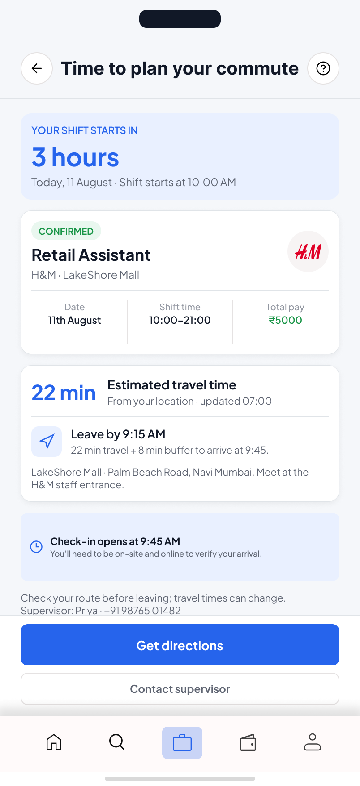
Designing for human dignity at scale.
Key strategic takeaways from codifying a two-sided gig labor marketplace and architectural milestones for taking UpCrew toward production.
Quantifying Trust in User Testing
While qualitative interviews confirmed the necessity of verification, future testing should include structured Likert-scale evaluations to measure perceived security across verified and unverified listings.
Cold-Start Supply and Demand
Two-sided marketplaces face liquidity challenges early on. In future iterations, model hyper-localized pilot rollouts targeted at high-density event crews and college campuses in Thane and Mumbai.
Phase 2: Predictive Shift Matching
Moving from manual shift browsing to smart algorithmic recommendations based on recurring worker availability, preferred transit corridors, and historical reliability ratings.
Phase 3: Digital Escrow Settlement
Automating fund reservation upon shift creation and releasing direct UPI payouts immediately after verified supervisor checkout, eliminating payment disputes entirely.
Let's build systems people can depend on
Available for product design roles and design engineering opportunities.